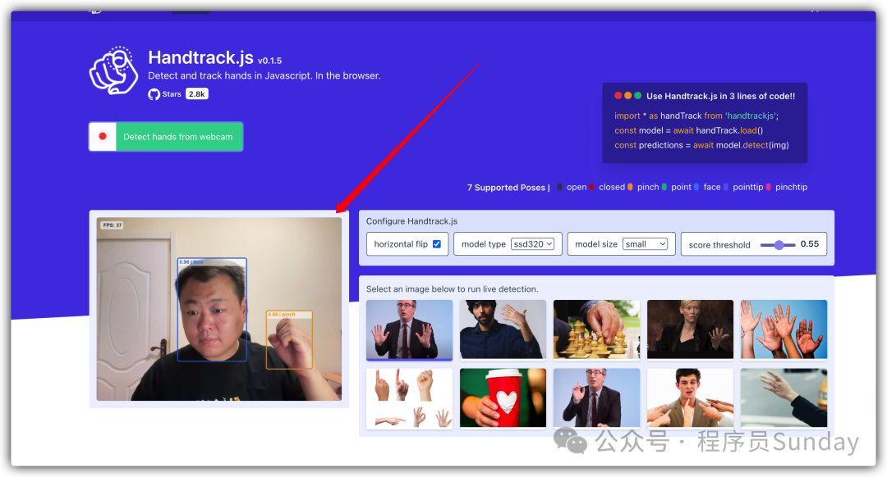
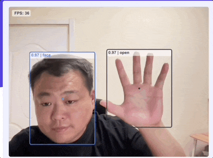
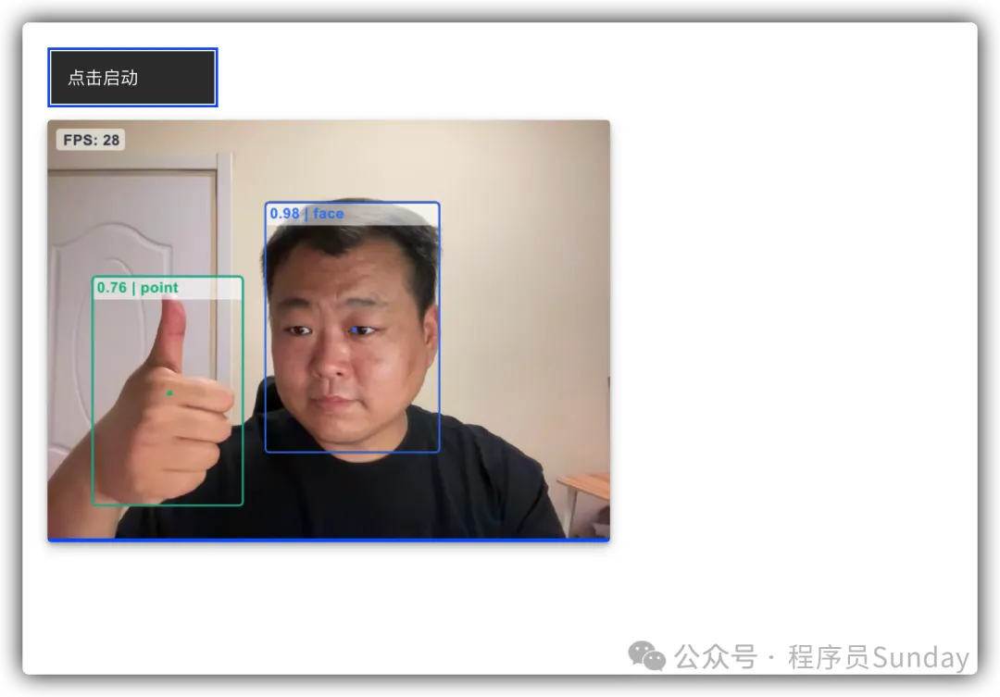

HandtrackJS 是一个基于 JavaScript 的开源库，用于实时手部检测和手势识别。它利用了机器学习模型来检测手的位置和姿势，使得开发者可以在网页和其他 JavaScript 环境中轻松地实现手势控制和交互功能。
HandtrackJS 提供了对应的案例，我们可以一起来看下对应的效果：

根据示例 DEMO 我们可以发现，利用 HandtrackJS 可以直接捕获到人像与手势，同时还可以根据不同的手势进行识别，如下图所示：

整个手势的状态被识别并分为了：open、pinch、closed 三种不同的状态
整个 HandtrackJS 使用也非常方便，根据官方文档所示，我们可以分别通过 npm 或 cdn 的形式直接进行安装，这里为了方便，直接通过 cdn 的形式引入：
<body class="bx--body p20">
<div class="mb10">
<button
id="trackbutton"
class="bx--btn bx--btn--secondary"
type="button"
disabled
>
点击启动
</button>
</div>
<!-- 捕捉和展示实时视频流 -->
<video
class="videobox canvasbox"
autoplay="autoplay"
id="myvideo"
style="display: none"
></video>
<!-- 视频流渲染到 canvas 之中 -->
<canvas id="canvas" class="border canvasbox"></canvas>
<!-- cdn 引入 handtrack -->
<script src="lib/handtrack.min.js"></script>
<script src="js/index.js"></script>
</body>
在上面代码中，核心有两个标签：
搞定了 html 之后，接下来我们来处理 js 的内容
handTrack 是 HandtrackJS 的核心类，可以利用它的 load 方法加载配置、模型：
let model = null; // 存储加载的模型
let trackButton = document.getElementById("trackbutton"); // 获取按钮元素
// 模型参数配置
const modelParams = {
maxNumBoxes: 20, // 最大检测框数量
iouThreshold: 0.5, // IOU阈值
scoreThreshold: 0.6, // 分数阈值
};
// 加载模型
handTrack.load(modelParams).then((lmodel) => {
model = lmodel; // 保存加载的模型
trackButton.disabled = false; // 启用按钮
});
监听 trackButton 按钮的点击行为，利用 video 开启摄像头
// 获取HTML中的video和canvas元素
const video = document.getElementById("myvideo");
const canvas = document.getElementById("canvas");
const context = canvas.getContext("2d"); // 获取canvas的2D绘图上下文
let isVideo = false; // 标记视频是否正在播放
// 开始视频捕捉
function startVideo() {
handTrack.startVideo(video).then(function (status) {
if (status) {
// 如果视频启动成功
isVideo = true; // 设置视频状态为正在播放
runDetection(); // 开始检测
} else {
// 视频启动失败处理（未实现）
}
});
}
// 运行检测
function runDetection() {
model.detect(video).then((predictions) => {
model.renderPredictions(predictions, canvas, context, video); // 在canvas上绘制检测结果
if (isVideo) {
requestAnimationFrame(runDetection); // 如果视频正在播放，继续检测
}
});
}
// 切换视频播放状态
function toggleVideo() {
if (!isVideo) {
startVideo(); // 如果视频未播放，则启动视频
} else {
handTrack.stopVideo(video); // 停止视频
isVideo = false; // 设置视频状态为未播放
}
}
// 按钮点击事件监听，点击按钮时切换视频状态
trackButton.addEventListener("click", function () {
toggleVideo();
});
至此整个的检测就已经全部完成了，是不是还是挺简单的。咱们来看看效果
